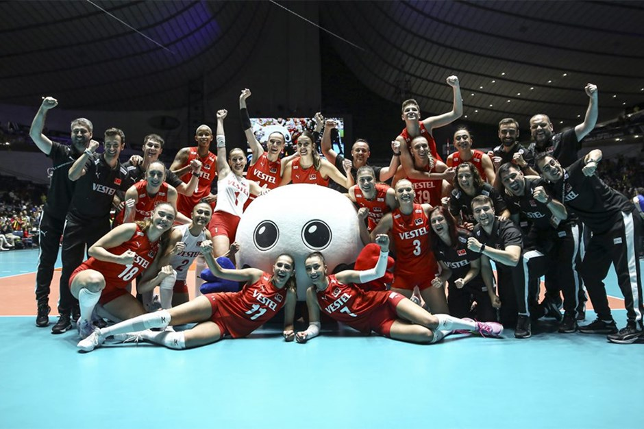
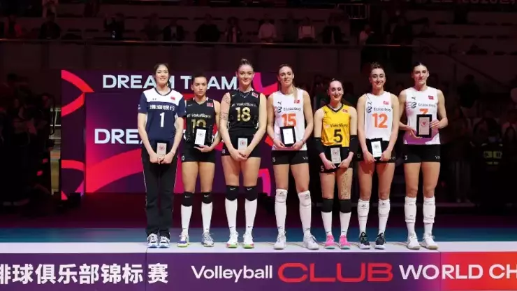
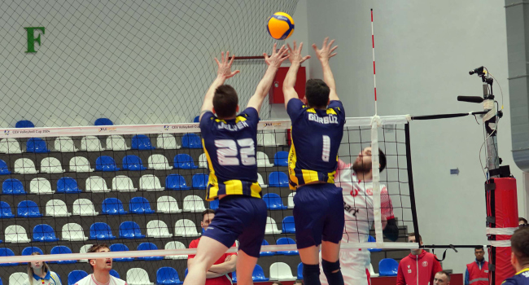
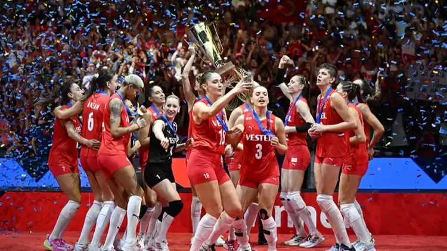

Filenin Sultanları 2023 yılına damga vurdu: 3 şampiyonluk

Filenin Sultanları için 2023 yılı tarihi başarılarla geçti. 2023'te 3 şampiyonluk yaşayan A Milli Kadın Voleybol Takımı, FIVB Milletler Ligi, CEV Avrupa Şampiyonası ve 2024 Paris Olimpiyat Oyunları Elemeleri'nde zafere ulaştı."Filenin Sultanları", Japonya'da oynanan sezonun son organizasyonu 2024 Paris Olimpiyat Oyunları Elemeleri B Grubu'nda ev sahibi Japonya, Brezilya, Belçika, Bulgaristan, Porto Riko, Arjantin ve Peru'yla mücadele etti.
Porto Riko'yu 3-0, Bulgaristan'ı 3-0, Peru'yu 3-1, Arjantin'i 3-1, Brezilya'yı 3-0, Japonya'yı 3-1 ve Belçika'yı 3-0 yenerek yedide yedi yapan milli takım, organizasyonu ilk kez yenilgisiz lider tamamlayarak, 2024 Paris Olimpiyat Oyunları'na katılma hakkı elde etti.
Milli takım, FIVB Milletler Ligi (6), CEV Avrupa Şampiyonası (9) ve 2024 Paris Olimpiyat Oyunları Elemeleri B Grubu'nda (7) oynadığı 22 maçı da kazanarak kırılması zor bir rekora imza attı.
2023 FIVB Kadınlar Dünya Kulüpler Şampiyonası’nın rüya takımı belli oldu

2023 FIVB Kadınlar Dünya Kulüpler Şampiyonası finalinde Türk voleybolu adına tarihi bir gün yaşandı.
Türkiye Cumhuriyeti'nin 100'üncü yılında tarihte ilk kez iki Türk takımının karşı karşıya geldiği dünyanın zirvesindeki finalde VakıfBank’ı 3-2 mağlup eden Eczacıbaşı Dynavit, 3'üncü kez Kulüpler Dünya şampiyonu oldu. Karşılaşmanın ardından 2023 FIVB Kadınlar Dünya Kulüpler Şampiyonası’nın rüya takımı da açıklandı.
Rüya takım şu isimlerden oluştu;
En Değerli Oyuncu (MVP): Tijana Boskovic (Eczacıbaşı Dynavit)
En İyi Pasör: Elif Şahin (Eczacıbaşı Dynavit)
En İyi Pasör Çaprazı: Tijana Boskovic (Eczacıbaşı Dynavit)
En İyi Smaçörler: Gabi Guimaraes (VakıfBank), Yingying Li (Tianjin)
En İyi Orta Oyuncular: Zehra Güneş (VakıfBank), Jovana Stevanovic (Eczacıbaşı Dynavit)
En İyi Libero: Ayça Aykaç Altıntaş (VakıfBank)
Arkas Spor, İspanya'dan avantajlı dönüyor
Voleybol Erkekler CEV Kupası play-off turu ilk maçında temsilcimiz Arkas Spor, deplasmanda İspanya ekibi Rio Duero'yu 3-1 yendi.
Los Pajaritos Salonu'nda oynanan karşılaşmada Arkas Spor, 25-23, 23-25, 25-17 ve 25-16'lık setlerle 3-1 galip geldi.
Karşılaşmanın rövanşı, 17 Ocak'ta İzmir'de oynanacak.
Fenerbahçe Parolapara ilk rauntta mağlup

Voleybol Erkekler CEV Kupası play-off turu ilk maçında temsilcimiz Fenerbahçe Parolapara, deplasmanda Ukrayna'nın Prometey ekibine 3-1 yenildi.
Romanya'daki Mioveni Spor Salonu'nda oynanan karşılaşmayı Prometey, 25-21, 25-15, 19-25 ve 26-24'lük setlerle 3-1 kazandı.
Karşılaşmanın rövanşı, 18 Ocak'ta İstanbul'da oynanacak.
Filenin Sultanları damga vurdu: Rüya Takıma Türkiye damgası!

En iyi pasör çapraz Melissa Vargas
Rüya Takım en iyi pasar çapraz oylamasında Melissa Vargas rakiplerine fark atarak 1. sırada yer aldı. Vargas oylamada yüzde 40 oy alırken, Boskovic yüzde 23 ile 2. , Egonu ise yüzde 11 ile 3. sırda kendine yer buldu.
1) Melissa Vargas / 1078 oy (40%)
2) Tijana Boskovic / 621 oy (23%)
3) Paola Egonu / 299 oy (11%)
4) Isabelle Haak / 147 oy (5%)
5) Ebrar Karakurt / 100 oy (4%)
İşte 2023'ün Rüya Takımı;
PASÖR: Joanna Wolosz
PASÖR ÇAPRAZI: Melissa Vargas
SMAÇÖR: Hande Baladın
SMAÇÖR: Gabi Guimaraes
ORTA OYUNCU: Eda Erdem
ORTA OYUNCU: Ana Carol
LİBERO: Gizem Örge